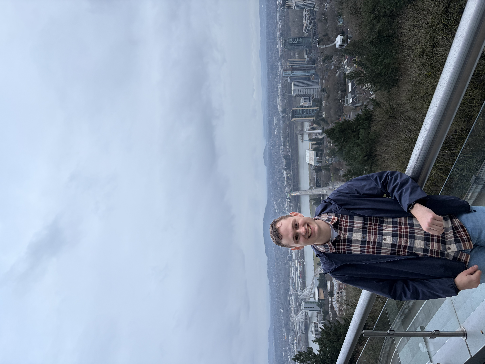

Ben Leviloff
PhD Student in Mathematics · University of Utah
I am a 3rd year PhD student working under Sean Howe in number theory and arithmetic geometry.
Research
These days I spend most of my time thinking about p-adic geometry, p-divisible groups, perfectoid spaces, and p-adic Fourier theory. If you also like thinking about similiar things, feel free to reach out!
Preprints/Papers:
Code:
Sage code that constructs nilpotent functions in L^1(G,E), where G is the group of characters of Z_p.Teaching
Fall 2026: Math 1060 — Trigonometry
Summer 2026: Math 2200 — Introduction to Discrete Mathematics
Fall 2025: TA for Math 2250 — Differential Equations and Linear Algebra
Summer 2025: Math 1080 — Precalculus
Spring 2024: TA for Math 2250 — Differential Equations and Linear Algebra
Fall 2024: TA for Math 2250 — Differential Equations and Linear Algebra